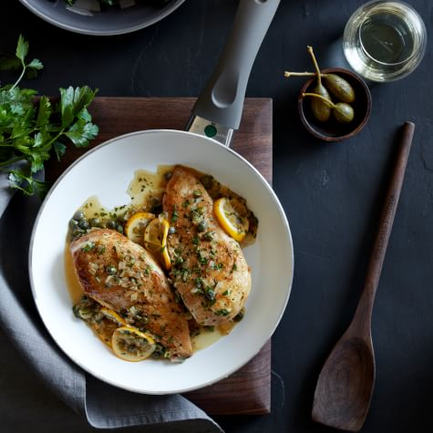

Chicken Piccata

Description
This easy Italian dish is a favorite of many busy cooks, since pounding boneless, skinless chicken breasts into tender cutlets mean they will cook quickly in a frypan. A flavorful pan sauce, bright with lemon juice and capers, is prepared in the same pan, making cleanup a breeze, too.
Ingredients
- 2 boneless chicken breast halves
- Kosher Salt
- Freshly ground pepper
- 1/2 cup all-purpose flour
- 3 Tbs. olive oil
- 3 Tbs. unsalted butter
- 1 Tbs. minced shallot
- 1/4 cup dry white wine
- 3 Tbs. fresh lemon juice
- 1/4 cup chicken broth
- 2 Tbs. drained capers
- 2 Tbs. fresh minced parsley
Steps
- Butterfly the chicken breasts and cut them in half. Working with one chicken breast half at a time, place the chicken between 2 pieces of plastic wrap and, using a meat pounder or other heavy, flat object, gently pound to an even thickness of about 1/4 inch (6 mm).
- Season the chicken on both sides with salt and pepper. Place the flour in a shallow bowl and dredge the chicken in it. Shake off the excess.
- In the nonstick fry pan over medium-high heat, warm 2 Tbs. of the olive oil. Place 2 pieces of chicken in the pan and cook, turning once, until browned on both sides, 2 to 3 minutes per side. Transfer to a platter or individual plates. Warm the remaining 1 Tbs. oil in the pan and repeat to brown the remaining chicken.
- Reduce the heat to medium and melt 1 Tbs. of the butter in the pan. Add the shallot and cook until softened and golden brown, about 30 seconds. Add the wine, lemon juice and broth, increase the heat to medium-high and cook until the liquid is slightly reduced, about 5 minutes.
- Remove the pan from the heat and whisk in the remaining 2 Tbs. butter, the capers and parsley. Season with salt and pepper. Drizzle the sauce over the chicken and pass any remaining sauce alongside. Serve immediately. Serves 4.